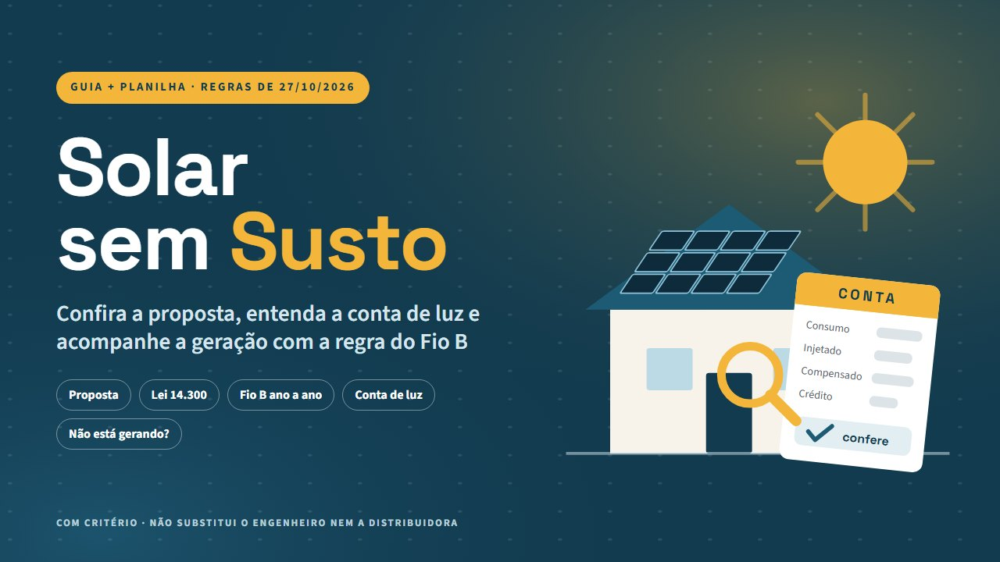

Solar sem Susto
Digite a proposta do integrador e veja se a geração prometida bate com o sol da sua cidade
Potência, geração estimada pela irradiação da cidade e preço por Wp. O retorno ano a ano com o Fio B da Lei 14.300 e as premissas na mesa. E, depois de instalado, cada linha da conta e um diário que avisa quando a geração cai.
Quero o meu por R$ 27Guia de 25 páginas + planilha + exemplo · acesso na hora · garantia de 7 dias
No exemplo · você digita a proposta
- Cidade
- São Paulo (SP)
- Placas
- 8 de 550 W
- Geração prometida
- 600 kWh/mês
- Preço da proposta
- R$ 14.960,00
A planilha mostra
- Potência do sistema
- 4,40 kWp
- Geração estimada pelo sol da cidade (70% a 80%)
- 424 a 485 kWh/mês
- Promessa acima da estimativa (75%)
- 32%
- Preço por Wp (referência R$ 2,84)
- R$ 3,40
PROMESSA ACIMA DA FAIXA: PEÇA AS PREMISSAS
Reprodução dos valores calculados pela planilha de exemplo (casa fictícia de 500 kWh/mês em São Paulo); não é captura de tela. Estimativa com premissas, não promessa de geração nem de economia.
A regra mudou para quem pede a ligação agora
Pela Lei 14.300/2022, quem pediu a ligação depois de 07/01/2023 paga, sobre cada kWh compensado, uma parte do Fio B (o uso da rede de distribuição). O percentual sobe todo ano (art. 27):
De 2029 em diante, a regra da ANEEL ainda não foi publicada (art. 17). O PL 1.438/2026, que muda essa cobrança, está em tramitação na Câmara e não vale enquanto não virar lei. Regras conferidas em 27/10/2026.
- Antes de assinar: a simulação da proposta usa o Fio B do ano em que o sistema vai ligar? A geração prometida bate com o sol da sua cidade? O preço por Wp está perto da média?
- Depois de instalado: a conta não zera por regra (mínimo da ligação e Fio B). Mas a compensação e o crédito precisam bater, e a queda de geração precisa ser vista em dias, não em meses.
O Solar sem Susto é a segunda opinião do lado de quem compra: não vende placa nem indica integrador. Ele dá as contas e as perguntas para você conversar com o vendedor, o instalador e a distribuidora em pé de igualdade.
O que tem dentro

- Conferir a proposta: potência em kWp, geração estimada pela irradiação de 27 capitais (ou da sua cidade) com taxa de desempenho de 70% a 80%, e preço por Wp contra uma referência de mercado.
- 12 perguntas para o integrador: premissas da geração, data do pedido de conexão, ART, visita técnica, garantias por escrito e monitoramento.
- Retorno ano a ano: 25 anos com o percentual do Fio B de cada ano (GD I ou GD II pela data do protocolo) e todas as premissas editáveis.
- Leitor da conta de luz: consumo, injetado, compensado, crédito e o mínimo da ligação, com a compensação esperada e o alerta quando não bate.
- Diário de geração: a geração do dia contra o esperado, com alerta de queda pela média de 7 dias.
- Planilha de exemplo: uma casa fictícia de 500 kWh/mês, com proposta, 12 contas e 90 dias de diário. Funciona no Excel, no Google Planilhas e no LibreOffice, sem macro.
- Guia em PDF de 25 páginas: como a energia anda, a regra do Fio B, a proposta, o retorno, a conta, o "não está gerando" e a quem recorrer, com a fonte oficial no fim de cada capítulo.
Uma amostra do exemplo do guia
Casa fictícia em São Paulo, 500 kWh/mês, proposta de 4,4 kWp. Números do exemplo, com as premissas escritas no guia; não são promessa.
| Geração prometida pela proposta | 600 kWh/mês |
| Geração estimada pela irradiação (taxa de 70% a 80%) | 424 a 485 kWh/mês |
| Preço por Wp da proposta | R$ 3,40 |
| Referência de mercado (Greener, jun/2025) | R$ 2,84 |
| Leitura | peça as premissas por escrito |
É para você se…
- Vai comprar energia solar para casa e tem uma proposta na mão.
- Já tem placas e quer entender a conta, a compensação e o crédito.
- Quer acompanhar a geração e saber cedo quando ela cai.
Não é para você se…
- Procura curso de instalador ou de "renda extra com energia solar".
- Precisa de projeto, dimensionamento, laudo ou instalação.
- O sistema é isolado (off-grid), com bateria, por assinatura ou de empresa no grupo A.
O que este produto NÃO é: não é projeto nem serviço técnico e não substitui o engenheiro, o integrador nem a distribuidora. Projeto e instalação exigem profissional habilitado, com ART. A planilha calcula com o que você digita e não mexe no seu sistema. Não garante economia, geração, retorno nem resultado: os números são estimativas com premissas. Não é recomendação de investimento nem de financiamento. Sem vínculo com a ANEEL, com distribuidoras, fabricantes, integradoras ou bancos. Regras conferidas nas fontes oficiais em 27/10/2026; o que está em tramitação está marcado no guia.
Tudo por um pagamento único
Guia de 25 páginas + planilha + exemplo · sem mensalidade
Pix ou cartão · acesso imediato pela área de membros da Kiwify (o link chega no seu e-mail)
100% de volta
Leia por 7 dias. Se não servir, o dinheiro volta inteiro.
Peça o reembolso pela Kiwify ou pelo e-mail lucaszone36@gmail.com, sem precisar explicar. Esse prazo é um direito seu pelo Código de Defesa do Consumidor (art. 49).
Quero conhecer com 7 dias de garantiaPerguntas frequentes
Como recebo?
Acesso imediato pela área de membros da Kiwify. O link de acesso chega no e-mail informado na compra.
Serve para quem ainda vai comprar?
Sim. A aba 1 confere a proposta e a aba 2 faz a conta de retorno com o Fio B do ano em que o sistema vai ligar. As 12 perguntas ajudam a pedir por escrito o que a proposta não diz.
Vai zerar a minha conta de luz?
Não. Pela regra, toda casa paga o mínimo da ligação, e quem pediu a ligação depois de 07/01/2023 paga parte do Fio B sobre o que compensa. O guia mostra por que a conta não zera e como conferir se a compensação está certa.
Substitui o engenheiro ou o integrador?
Não. O material explica as regras gerais e organiza os seus números. Projeto, dimensionamento e instalação são de profissional habilitado, com ART, seguindo as regras da sua distribuidora.
E se a regra do Fio B mudar?
As regras foram conferidas em 27/10/2026. O que está em tramitação (como o PL 1.438/2026) está marcado e fora das contas. A planilha deixa o percentual de 2029 em diante, a tarifa e o Fio B em células editáveis.
A planilha funciona no celular e no Google Planilhas?
Abre no Excel, no Google Planilhas e no LibreOffice, sem macro. No celular, o PDF lê bem; a planilha é mais confortável no computador ou no tablet.
Garante economia ou retorno?
Não. Os números são estimativas com as premissas que você digita. O exemplo do guia é fictício e serve para mostrar a conta.
E se eu me arrepender?
Você tem 7 dias para pedir 100% do valor de volta, sem justificar, pela Kiwify ou pelo e-mail lucaszone36@gmail.com.